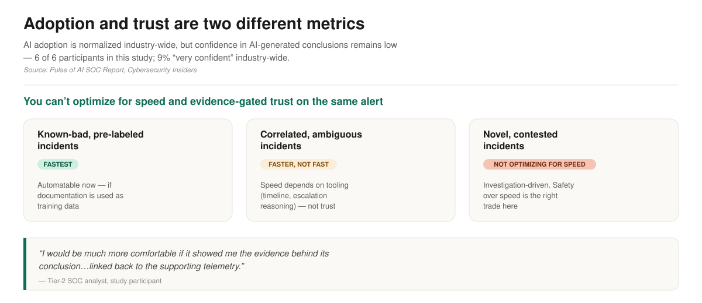
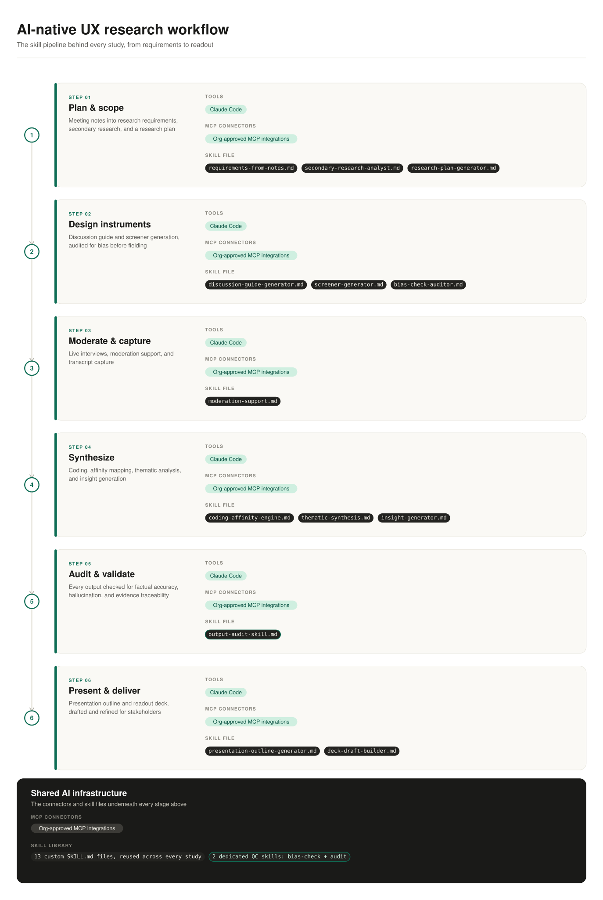
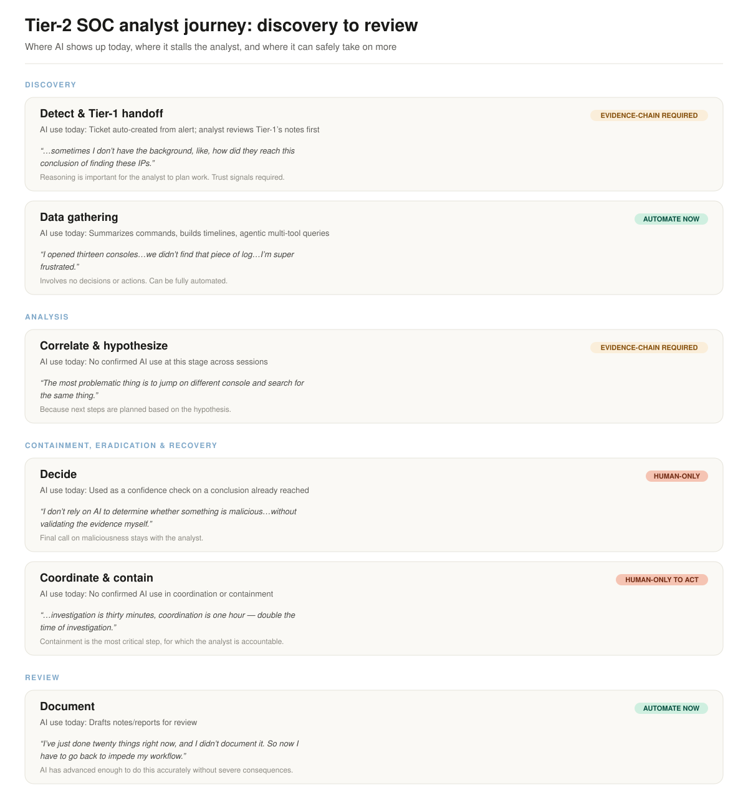
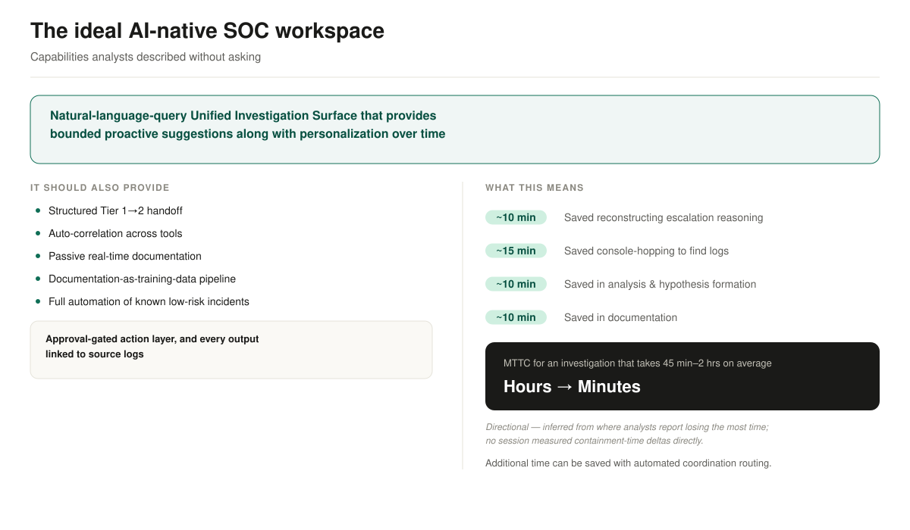

AI-native experience for security analysts
- Role
- Solo researcher, end to end
- For
- ServiceNow SecOps
- Methods
- 6 one-on-one, 60-minute interviews with Tier-2 SOC analysts
You can't optimize for speed and for evidence-gated trust on the same alert. A study of where AI can safely act in a Tier-2 analyst's investigation.
The tension

I ran this project alone, from meeting notes to the final readout, to find where AI can safely take on more of a Tier-2 analyst's workflow.
“I would be much more comfortable if it showed me the evidence behind its conclusion… linked back to the supporting telemetry.”
How I got there
The study: 6 semi-structured, one-on-one, 60-minute interviews with Tier-2 SOC analysts across different org models and industries. Each participant used a different mix of company-sanctioned and self-directed AI tools. That showed how AI is really used in security work, not only how it is supposed to be used.
| Session | Role | Org model | Industry |
|---|---|---|---|
| P1 | Hybrid L1+L2 SOC analyst | Tiered global SOC | Global, multi-region |
| P2 | SOC lead | One-person InfoSec function | Financial services |
| P3 | Tier-2 security analyst | Tiered, about 4 people | Tech / cloud |
| P4 | Incident response analyst | End-to-end ownership | Financial services |
| P5 | Tier-2 SOC analyst | Tiered, mature SOC | Financial services |
| P6 | Cloud security analyst | Small, single manager | Logistics |
Tools in use ranged from Claude Code orchestrating GitHub and Splunk CLIs, to Microsoft Copilot narrating an investigation into documentation, to a self-built agent that acts as a read-only Tier-1 analyst.

The part that mattered more than I expected
Halfway through synthesis I noticed that what analysts asked of AI, evidence linked back to its source, was what I had already built into my own research pipeline.
I had added a bias-check skill that audited my discussion guide for leading or loaded framing before it reached a participant. A separate audit skill checked every AI output at each stage for factual accuracy, hallucination and traceability back to source.
The study concluded that trust needs evidence-linking and bias-checking, not only speed. I already hold my own AI-assisted work to that standard.
A framework for where AI belongs
The deliverable that made the findings actionable was a journey map: Discovery, Analysis, Containment/Eradication/Recovery, Review. Each stage of the Tier-2 workflow falls into one of three zones.
- Automate now: data gathering and documentation. No decisions or actions are involved, and AI can do it accurately without severe consequences when wrong.
- Evidence chain required: detection and handoff, correlation and hypothesis. Reasoning has to be visible, because the analyst plans real work from it.
- Human only: the decision on maliciousness, and coordinating and executing containment. Accountability stays with the analyst, and safety has to beat speed.
That gave the team a stage-by-stage answer to “where should we build AI into the SOC workspace”, instead of a general direction.

The ideal AI-native SOC workspace
Largely without being asked, analysts described their ideal workspace: a natural-language Unified Investigation Surface with bounded proactive suggestions and personalization over time. An approval layer gates actions, and every output links back to source logs.

The time-saved figures on this diagram are directional. They are inferred from where analysts reported losing the most time, and no session measured them.
What happened next
The recommended next step was to validate the workspace design with customer-side decision-makers, to test real buying intent and not stop at internal validation.
This was research produced by an AI-native workflow, held to the evidence-linked, bias-checked standard the study itself argued for.